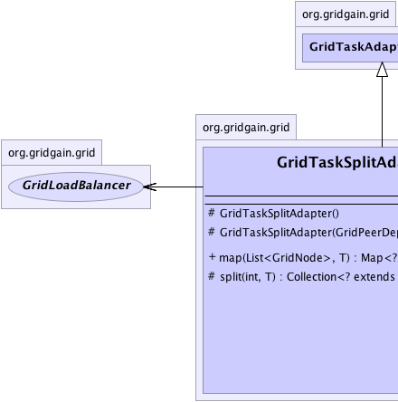
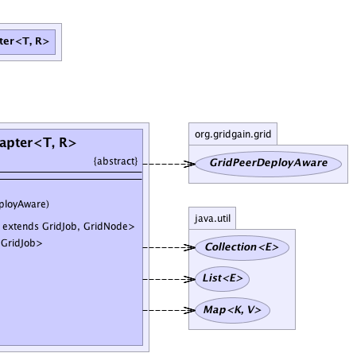

org.gridgain.grid.lang.GridMetadataAwareAdapter
org.gridgain.grid.GridTaskAdapter<T,R>
org.gridgain.grid.GridTaskSplitAdapter<T,R>
org.gridgain.grid.lang.GridMetadataAwareAdapter
org.gridgain.grid.GridTaskAdapter<T,R>
org.gridgain.grid.GridTaskSplitAdapter<T,R>
|
GridGain™ 3.6.0c
Community Edition |
|||||||||
| PREV CLASS NEXT CLASS | FRAMES NO FRAMES | |||||||||
| SUMMARY: NESTED | FIELD | CONSTR | METHOD | DETAIL: FIELD | CONSTR | METHOD | |||||||||
java.lang.Object
T - Type of the task execution argument.R - Type of the task result returning from GridTask.reduce(List) method.public abstract class GridTaskSplitAdapter<T,R>
This class defines simplified adapter for GridTask. This adapter can be used
when jobs can be randomly assigned to available grid nodes. This adapter is sufficient
in most homogeneous environments where all nodes are equally suitable for executing grid
job. See GridTaskSplitAdapter.split(int, Object) method for more details.
Below is a coding example of how you would use GridTaskSplitAdapter:
public class MyFooBarTask extends GridTaskSplitAdapter<Object, String> {
@Override
protected Collection<? extends GridJob> split(int gridSize, Object arg) throws GridException {
List<MyFooBarJob> jobs = new ArrayList<MyFooBarJob>(gridSize);
for (int i = 0; i < gridSize; i++) {
jobs.add(new MyFooBarJob(arg));
}
// Node assignment via load balancer
// happens automatically.
return jobs;
}
// Aggregate results into one compound result.
public String reduce(List<GridJobResult> results) throws GridException {
// For the purpose of this example we simply
// concatenate string representation of every
// job result
StringBuilder buf = new StringBuilder();
for (GridJobResult res : results) {
// Append string representation of result
// returned by every job.
buf.append(res.getData().string());
}
return buf.string();
}
}
| Wiki | |
| Forum |
|  |  |
| Constructor Summary | |
|---|---|
protected |
GridTaskSplitAdapter()
Empty constructor. |
protected |
GridTaskSplitAdapter(GridPeerDeployAware p)
Constructor that receives deployment information for task. |
| Method Summary | |
|---|---|
Map<? extends GridJob,GridNode> |
map(List<GridNode> subgrid,
T arg)
This method is called to map or split grid task into multiple grid jobs. |
protected abstract Collection<? extends GridJob> |
split(int gridSize,
T arg)
This is a simplified version of GridTask.map(List, Object) method. |
| Methods inherited from class org.gridgain.grid.GridTaskAdapter |
|---|
classLoader, deployClass, result, setPeerDeployAware |
| Methods inherited from class org.gridgain.grid.lang.GridMetadataAwareAdapter |
|---|
addMeta, addMetaIfAbsent, addMetaIfAbsent, allMeta, clone, copyMeta, copyMeta, hasMeta, hasMeta, meta, putMetaIfAbsent, putMetaIfAbsent, readExternalMeta, removeMeta, removeMeta, replaceMeta, writeExternalMeta |
| Methods inherited from class java.lang.Object |
|---|
equals, finalize, getClass, hashCode, notify, notifyAll, toString, wait, wait, wait |
| Methods inherited from interface org.gridgain.grid.GridTask |
|---|
reduce |
| Constructor Detail |
|---|
protected GridTaskSplitAdapter()
protected GridTaskSplitAdapter(GridPeerDeployAware p)
p - Deployment information.| Method Detail |
|---|
protected abstract Collection<? extends GridJob> split(int gridSize, T arg) throws GridException
GridTask.map(List, Object) method.
This method basically takes given argument and splits it into a collection
of GridJob using provided grid size as indication of how many node are
available. These jobs will be randomly mapped to available grid nodes. Note that
if number of jobs is greater than number of grid nodes (i.e, grid size), the grid
nodes will be reused and some jobs will end up on the same grid nodes.
GridException - Thrown in case of any errors.gridSize - Number of available grid nodes. Note that returned number of
jobs can be less, equal or greater than this grid size.arg - Task execution argument. Can be null.
GridTask.map(List, Object)public final Map<? extends GridJob,GridNode> map(List<GridNode> subgrid, T arg) throws GridException
GridException - If mapping could not complete successfully. This exception will be
thrown out of GridTaskFuture.get() method.subgrid - Nodes available for this task execution. Note that order of nodes is
guaranteed to be randomized by container. This ensures that every time
you simply iterate through grid nodes, the order of nodes will be random which
over time should result into all nodes being used equally.arg - Task execution argument. Can be null. This is the same argument
as the one passed into Grid#execute(...) methods.
null or empty map
is returned, exception will be thrown.
|
GridGain™ 3.6.0c
Community Edition |
|||||||||
| PREV CLASS NEXT CLASS | FRAMES NO FRAMES | |||||||||
| SUMMARY: NESTED | FIELD | CONSTR | METHOD | DETAIL: FIELD | CONSTR | METHOD | |||||||||
|
GridGain - Real Time Big Data
|
|

|
|